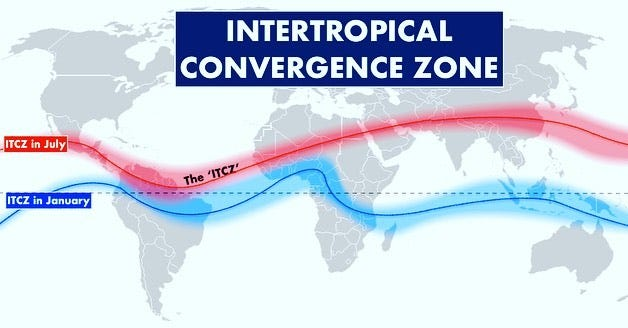
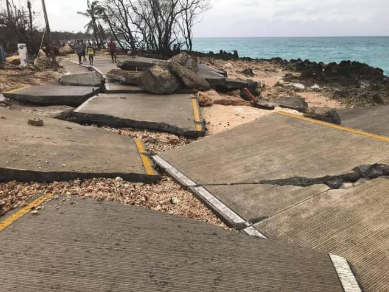
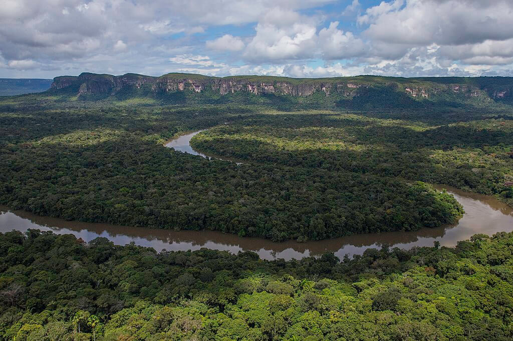
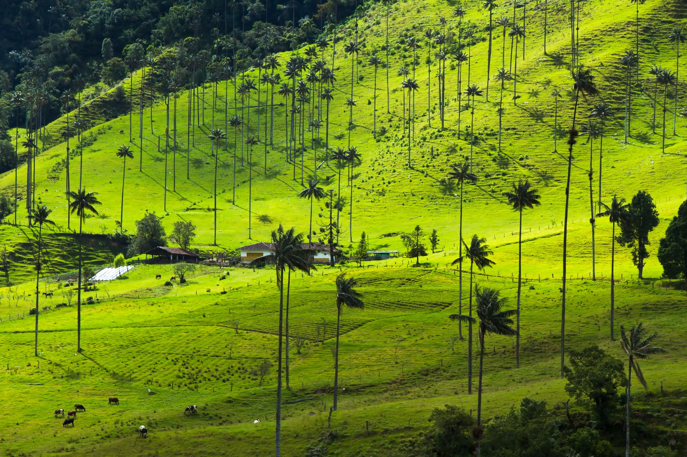
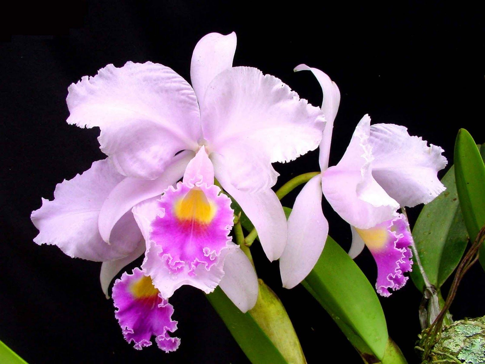
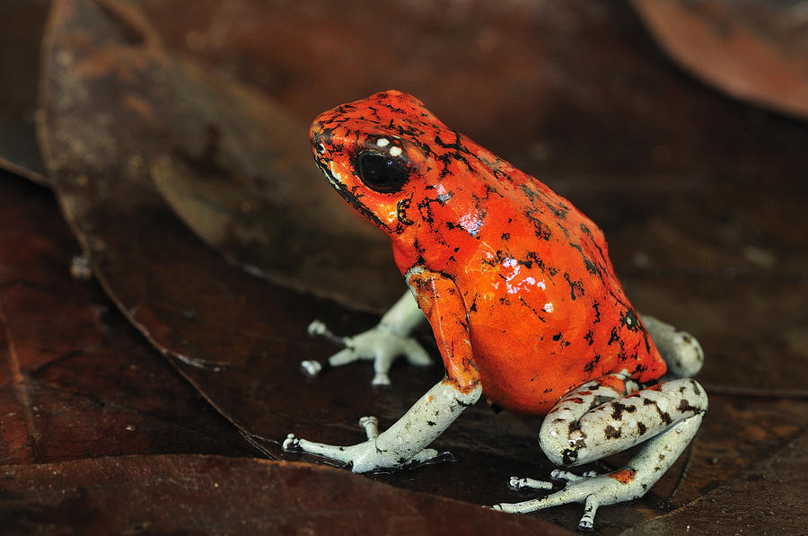

Global Position and Weather Patterns
Colombia’s equatorial position places it within the influence of global atmospheric circulation patterns, particularly the Intertropical Convergence Zone (ITCZ), which shifts seasonally and brings heavy precipitation. The country is affected by the Hadley Cell, contributing to the humid, tropical climate in the lowlands. Colombia’s topography—including the Andes—interacts with trade winds to create diverse microclimates. This combination makes Colombia one of the most climatically diverse countries in the world.
Additionally, Colombia lies in a low-pressure belt along the equator which promotes rising moist air and high rainfall. The country is influenced by the northeast trade winds from the Northern Hemisphere, and southeast trade winds from the Southern Hemisphere. These wind belt systems converge near the ITCZ, enhancing precipitation. Colombia also experiences predictable precipitation patterns, with bimodal rainfall in many areas due to these circulation dynamics.
Severe Weather in Colombia
Colombia regularly faces floods and landslides, particularly during La Niña years. Flooding in the Magdalena River basin can disrupt entire communities. Landslides in cities like Manizales and Medellín cause fatalities and infrastructure damage. While rare, hurricanes like Iota have devastated coastal islands. Wildfires occur during dry seasons in the Orinoquía and Caribbean regions, driven by both human activity and drought conditions.
For instance, in November 2020, Hurricane Iota struck Providencia Island, causing widespread destruction and displacing hundreds. In 2022, heavy rains caused flooding in Chocó and Antioquia departments, affecting thousands of residents. These examples highlight the recurring and severe impacts of natural weather events across Colombia’s diverse regions.
Biomes in Colombia
Colombia is home to six major biomes: tropical rainforests, mountain forests, savannas, deserts, mangroves, and páramos. These ecosystems support rich biodiversity and also shape cultural and regional identities. While the Amazon and Pacific regions are rich in indigenous traditions, urban-industrial zones around Bogotá and Medellín are focused on modern development. This ecological diversity has the potential to both unite through conservation and divide through resource exploitation conflicts.
The páramo biome is particularly unique to Colombia and provides essential water sources for major cities. The Amazon biome is one of the most biodiverse areas on the planet, while the mangroves protect coastal areas from erosion and storm surges.
Native Plants
Colombia is home to more species of orchids than any other country in the world, with over 4,000 species, many of which are endemic. The orchid is also the national flower and symbolizes Colombia’s biodiversity. Another important plant is the Palma de Cera (wax palm), the national tree of Colombia, found in the Andean cloud forests. It plays a key ecological role and is sacred in local cultures. These plants are not only beautiful but vital to ecosystems and cultural identity.
Coffee, though originally from Africa, has become a defining agricultural product of Colombia, with native varietals adapted to its mountain climate. Native plants support pollinators, prevent erosion, and maintain soil health in various ecosystems.
 Climate Overview
Average temperature: Columbia is characterized by three climatic zones, defined by the countrie’s topography. The annual average temperature is 24–27°C in the tropical zone along the coast, 18°C in the temperate zones located between 1,000–2,000m in elevation and 13–17°C in the higher elevation areas (+3000m) (World Bank, 2021).
Average rainfall: Columbia’s climate features one to two rainy and dry seasons, depending on the region (World Bank, 2023). Average annual rainfall is 2,630mm but varies significantly across the country. The Andean interior and the West Pacific coast receive the highest rainfall with 6,000–7,000mm per year. The north and west receive less than 500mm per year (World Bank, 2021)
Major drivers of climate variability:
- 1. El Nino–Southern Oscillation (ENSO)
- 2. Intertropical Convergence Zone (ITCZ)
- 3. Topography of the Andes mountains along with the influences of the western Atlantic Ocean, eastern Pacific Ocean and the Amazon basin
Native Animals
Colombia shelters over 1,900 bird species and countless mammals, amphibians, and reptiles. Iconic animals include the jaguar, pink dolphin, and Andean condor. Amphibians like the golden poison frog, one of the most toxic species, are unique to Colombia. Domesticated animals such as guinea pigs and llamas are raised in Andean highlands. Animal diversity supports tourism, agriculture, and scientific discovery.
These animals play crucial ecological roles: jaguars control prey populations, condors serve as scavengers, and frogs are indicators of environmental health. Colombia’s fauna is not only vital for ecosystem balance but also deeply tied to cultural symbolism and local economies.
Multimedia
Explore Colombia’s climate zones and biodiversity in this documentary: